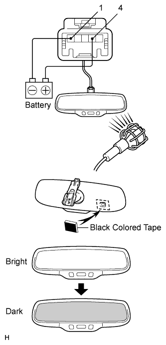

INNER REAR VIEW MIRROR > INSPECTION |
| 1. INSPECT INNER REAR VIEW MIRROR ASSEMBLY (w/ EC Mirror) |
 |
Check the operation of the electrochromic inner mirror.
Connect the battery positive (+) lead to terminal 4 and the negative (-) lead to terminal 1.
Attach black colored tape to the forward sensor to prevent it from sensing.
Shine an electric light on the mirror. Check that the mirror surface changes from bright to dark.